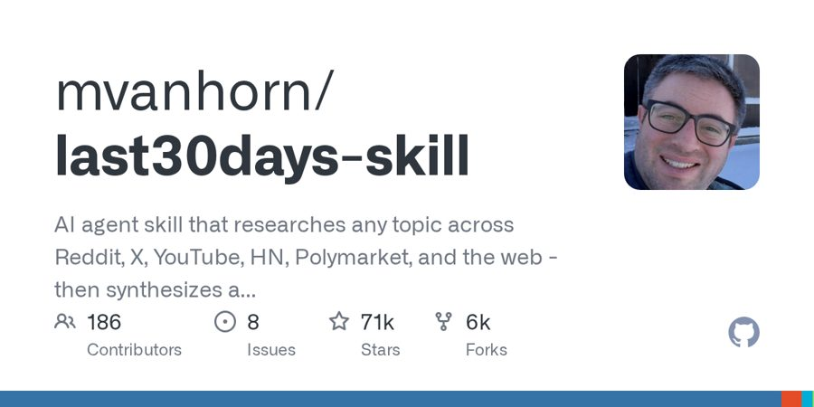
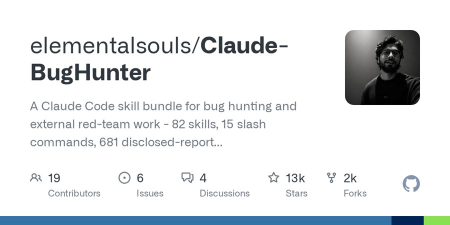
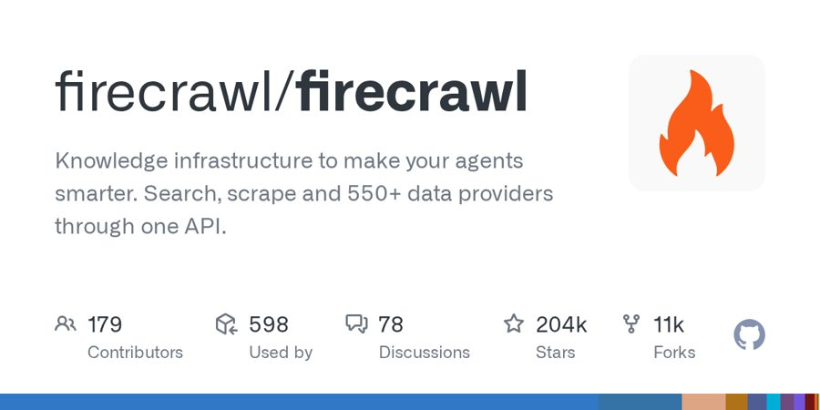
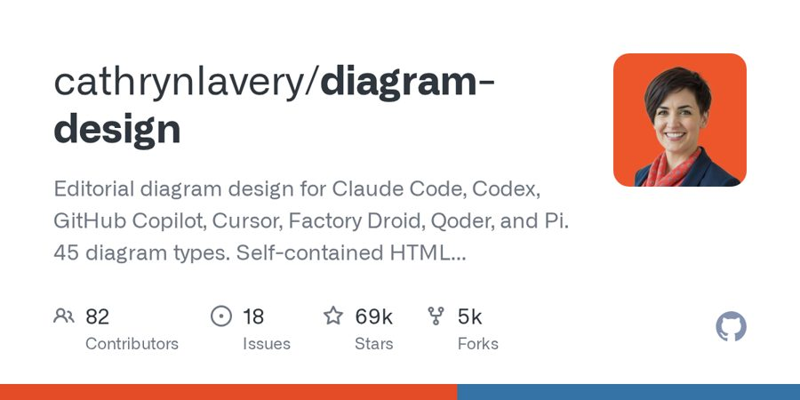

11 月 20 日 · 10 条选题
今日AI选题集中在B站AI整活与GitHub技能包，工具实测类最好落地。
01B站AI创造公开赛：把Windows10装进B站里，点击即玩
B站AI创造公开赛作品登上日榜，UP主用AI把Windows10塞进B站页面里，打开视频即可点开使用，播放量252万。
为什么火
AI+整活+可交互，观众能直接上手玩，比单纯讲工具有参与感，也证明普通人用AI能做出爆款作品。
切入角度
- 拆解这条视频的AI工作流：从创意到可玩页面的步骤，给普通人的复刻清单
- 盘点B站AI创造公开赛里5个普通人也能模仿的玩法，附难度分级
- 教读者用AI生成一个“打开就能玩”的小网页，从选题到发布全流程
小红书标题
把Win10装进B站，AI真能做到
252万人围观！AI整活新玩法
适合：想用AI做有趣内容、想涨粉的普通创作者
02赵本山《Bad Guy》AI MV爆火，象牙山蹦野迪
B站AI MV大赛作品把赵本山小品形象与《Bad Guy》混剪成AI MV，播放220.5万，登上日榜。
为什么火
熟悉的本山大叔配欧美神曲，反差感极强，AI让零剪辑基础的人也能做MV，观众看完就想自己试。
切入角度
- 用AI做同款MV的三步流程：选歌、生成画面、对口型，工具逐个点名
- 盘点AI MV最容易出效果的5种反差搭配公式，直接套用
- 普通人做AI MV要避的3个坑：版权、画质、口型不同步
小红书标题
赵本山唱Bad Guy，AI太会了
220万人看过的AI MV怎么做
适合：会玩梗、想做短视频但不会剪辑的普通用户
03让100个游戏强行兼容MC，AI+VR版头号玩家
UP主用AI让街霸6、2077、Doom等游戏强行兼容我的世界，计划做100个，第一集播放126.4万。
为什么火
AI+MC+VR的组合让人联想到头号玩家，脑洞大、可连载，游戏玩家和AI爱好者都想追更。
切入角度
- 拆解“AI让游戏互通”的技术路线，用大白话讲给非开发者听
- 普通人能玩的AI游戏改造小实验：从改一个MOD开始
- AI+VR未来娱乐场景盘点，哪些今天已经能体验
小红书标题
AI让100个游戏兼容MC，太疯了
126万人追的AI游戏实验
适合：游戏玩家、对AI+娱乐好奇的年轻用户
04Gemini 4 Neon登顶模型工程指数第一
Gemini 4 Neon在Models Engineering Index上成为新的第一名，HN讨论331分、196条评论。
为什么火
模型排名每次变动都牵动工具选择，普通用户最关心“到底该用哪个”，天然适合做对比测评。
切入角度
- Gemini 4 Neon vs 主流模型实测：写文案、做表格、改图各测一轮
- 按使用场景给结论：日常问答、长文写作、代码辅助分别选谁
- 新模型上手攻略：免费额度、入口、和旧版Gemini的区别
小红书标题
Gemini 4 Neon登顶，实测值不值
新模型第一？我拿它干了3件事
适合：正在挑AI工具、想换模型的普通用户
05Claude解出两个黑洞物理开放问题
Anthropic研究显示Claude解决了黑洞物理学中的两个开放问题，HN讨论457分、218条评论。
为什么火
AI做出科研级成果，冲击“AI只会聊天”的印象，普通人好奇AI到底能帮自己解决什么难题。
切入角度
- 用大白话讲Claude这次做了什么，普通人能看懂版
- 把“AI做科研”翻译成日常用法：让AI帮你啃专业长文、查资料
- AI解题能力实测：拿3道专业难题分别问主流模型对比
小红书标题
Claude解出黑洞难题，AI真进化了
AI帮科学家解题，普通人能用吗
适合：对AI能力好奇、想用AI学知识的普通用户
06AI没抢走你的工作，而是把它变成低薪零工
Rest of World文章讨论AI对岗位的影响：不是直接替代，而是把工作拆成低薪、碎片化的零工任务，HN讨论130分。
为什么火
戳中打工人焦虑，观点反常识，容易引发“我的工作会变成什么样”的讨论和转发。
切入角度
- 用3个真实岗位场景讲清“工作被拆碎”是什么样
- 普通人反制清单：哪些AI技能能让你从被拆解的一方变成指挥方
- 把AI当副驾而不是替代：5个提效但不贬值的用法
小红书标题
AI没抢工作，是把它变零工了
打工人必看：AI正在这样改工作
适合：担心被AI影响的职场人、自由职业者
07last30days：一个AI技能帮你跨平台调研任何话题

开源项目last30days-skill是一个AI agent技能，能跨Reddit、X、YouTube、HN、Polymarket和网页调研任意话题并生成有依据的总结，今日涨954星。
为什么火
“一句话调研全网”正好解决普通人做选题、做决策的信息焦虑，开源免费、可上手。
切入角度
- 手把手装好这个技能，用它调研一个热门话题看输出效果
- 用它做小红书选题调研：输入关键词，10分钟出资料包
- 同类AI调研工具横评：谁更适合非技术用户
小红书标题
954星的AI技能，一句话查全网
做选题不用翻墙找资料了
适合：做内容、做调研、需要快速查资料的普通用户
08Claude-BugHunter：82个技能包做安全测试

elementalsouls/Claude-BugHunter是Claude Code技能包合集，含82个技能、15个斜杠命令和681条已披露报告模式，覆盖24类核心漏洞，今日涨1349星。
为什么火
AI+安全是热门交叉领域，技能包形态让非开发者也能理解“AI能批量干专业活”，星数涨得猛。
切入角度
- 用大白话讲这个技能包是干什么的，非技术读者能懂版
- AI技能包热潮盘点：为什么最近这类项目一天涨上千星
- 普通人该关注的AI安全常识：3件事现在就能做
小红书标题
1349星的AI技能包，干什么的
AI批量查漏洞，普通人该慌吗
适合：对AI安全好奇、关注技术趋势的普通用户
09firecrawl：让AI agent更聪明的知识基建

firecrawl提供搜索、抓取和550+数据源接入的统一API，定位为让agent更聪明的知识基础设施，今日涨825星。
为什么火
AI agent要干活先要有数据，抓取类工具是刚需，开发者和进阶用户都在关注。
切入角度
- 用非技术语言讲清“给AI喂资料”为什么重要
- 普通人版用法：把网页内容变成AI能读的资料，3步搞定
- AI抓取工具的合规边界：哪些能抓、哪些别碰
小红书标题
825星的AI抓取工具，怎么用
让AI读全网，这个工具做到了
适合：想让AI处理网页资料的进阶普通用户
10diagram-design：45种图表让AI帮你画专业图

cathrynlavery/diagram-design为Claude Code、Cursor等工具提供45种编辑级图表设计，输出自包含HTML+SVG，今日涨271星。
为什么火
做PPT、做汇报的人最缺好看图表，AI直接出图切中刚需，工具适配多个主流AI编程工具。
切入角度
- 实测用AI生成45种图表中的5种，看哪种最适合汇报
- 不会设计也能出图：从一句话需求到成图的完整流程
- 和传统图表工具对比：AI画图快在哪、差在哪
小红书标题
AI帮我画图表，45种随便挑
做PPT的救星，271星AI工具
适合：要做汇报、PPT、内容的职场人